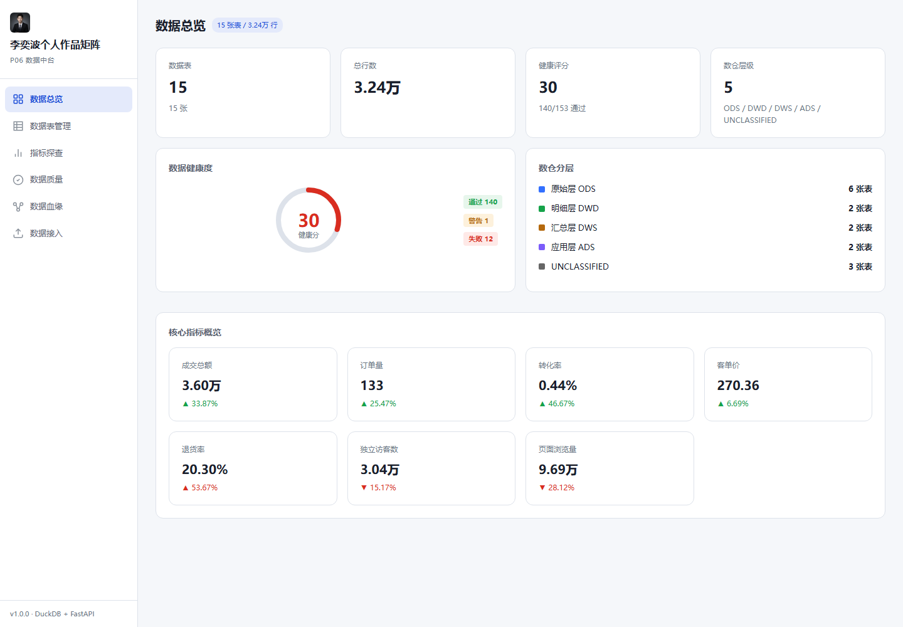
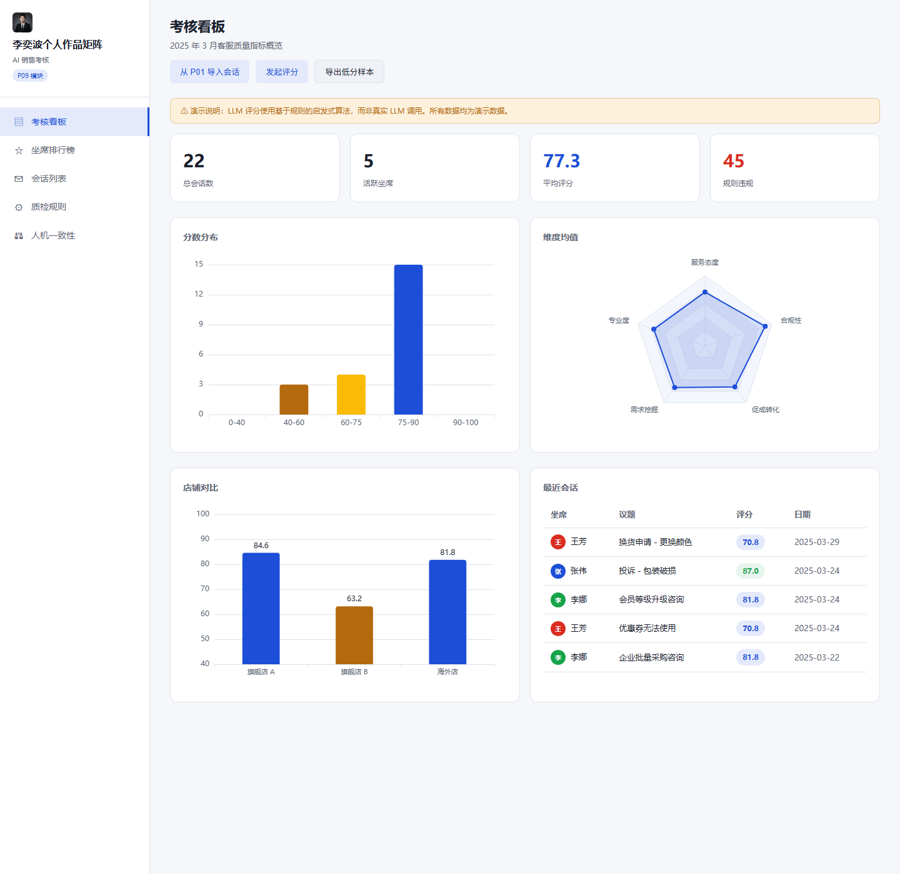
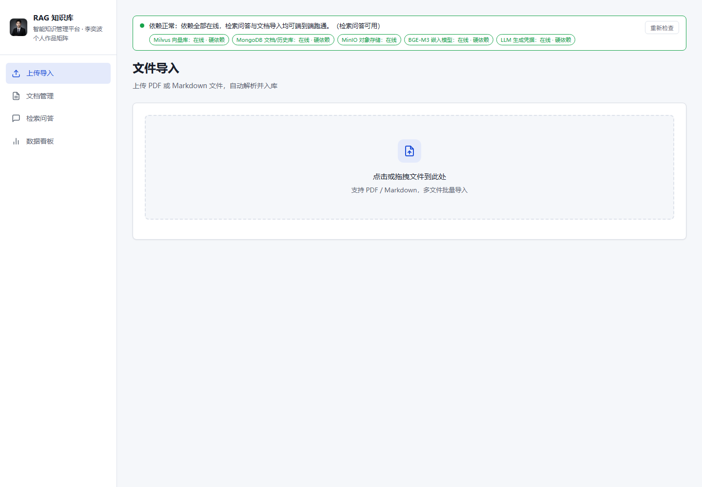
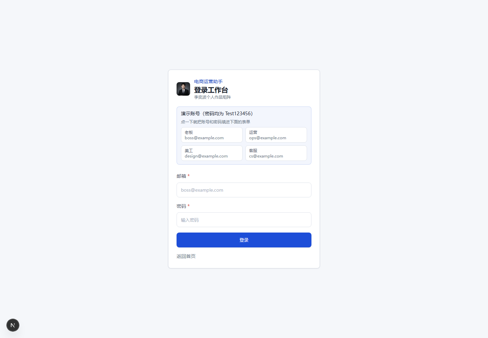
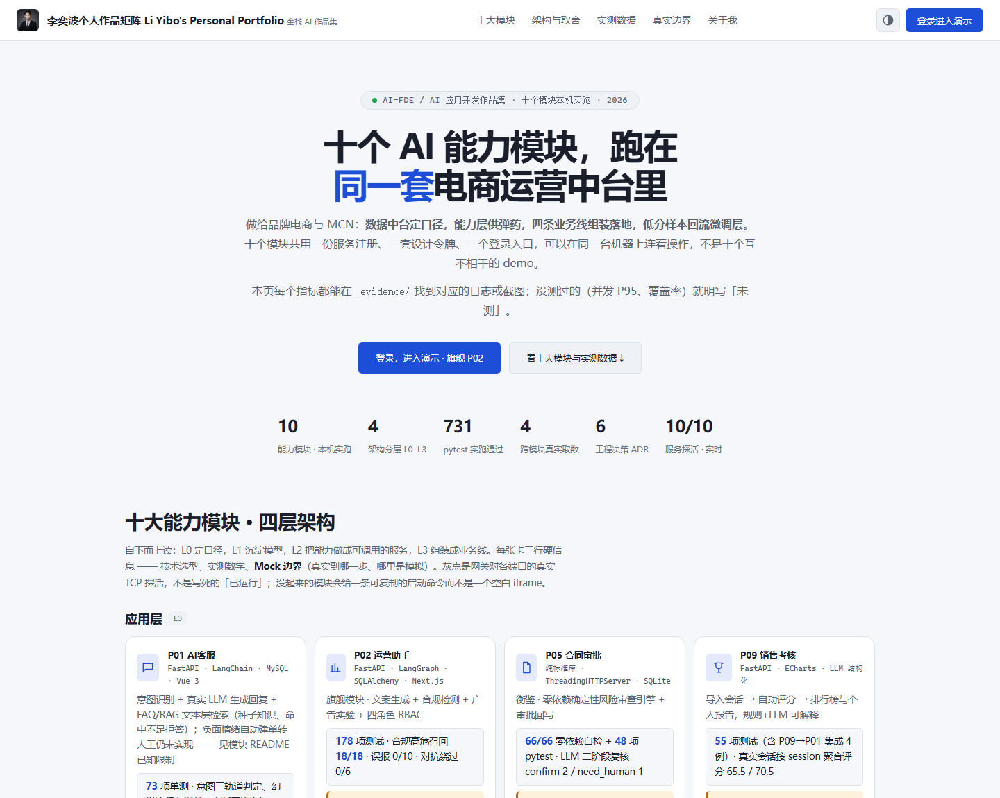
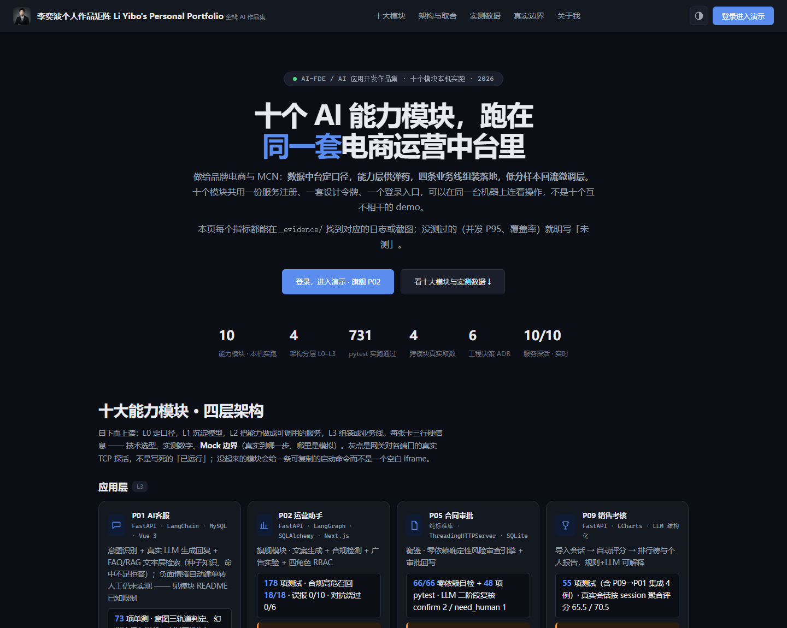
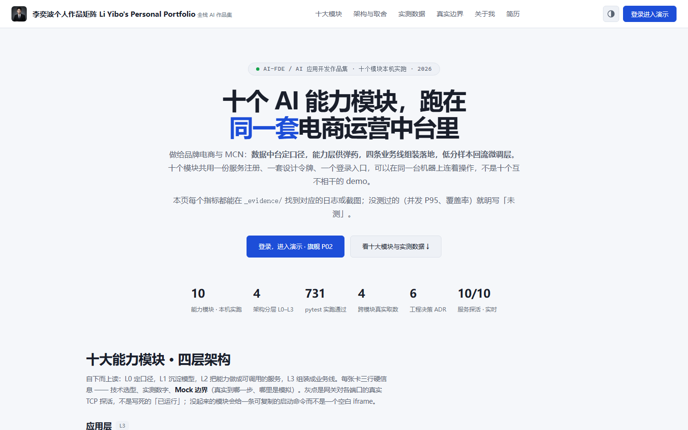
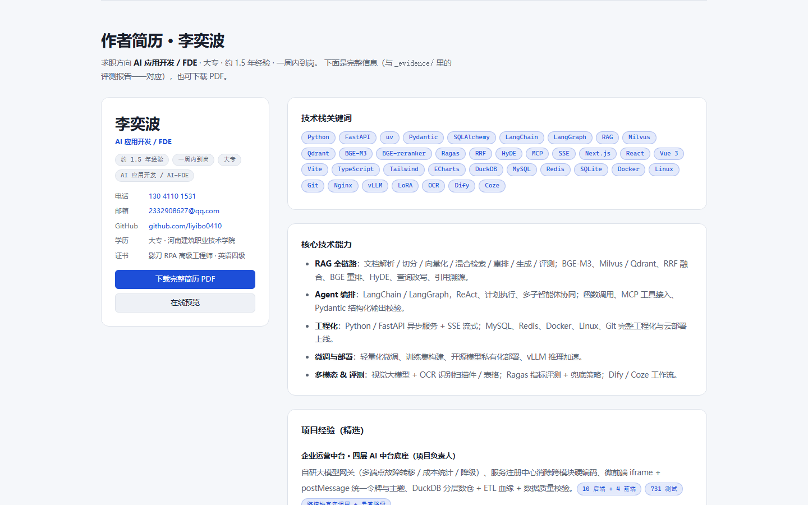
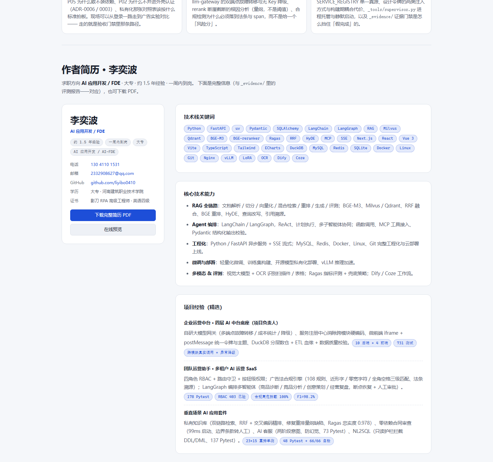

2026-10-15 · OpenCode · 四项要求：① 换 Navy Steel ② 十个模块统一到这个蓝 ③ 顶部文本图标换 SVG ⑤ 加动效 + 简历区完整排版（技术栈小块带动效）
#3370FF 对白底只有 4.28:1，不满足 WCAG AA 正文门槛；换 #1D4ED8 后
6.70:1（白字压在它上面同样是 6.70:1）。这次不是「换个好看的颜色」，是把不达标的蓝顺手修成达标的蓝。
--cp-brand 计算值| 入口 | 状态 | --cp-brand | --cp-ink3 |
|---|---|---|---|
| shell 外壳 8800 | complete | #1D4ED8 | #6B7787 |
| P01 客服前端 5173 | complete | #1D4ED8 | #6B7787 |
| P02 运营前端 3001 | complete | #1d4ed8 | #6b7787 |
| P03 问数前端 5174 | complete | #1D4ED8 | #6B7787 |
| P04 / P05 / P06 / P07 / P08 / P09 / P10 | complete | #1D4ED8 | #6B7787 |
11 / 11 已统一 0 个仍是旧蓝 第一轮只有 P02 还是旧蓝 —— 它用的是自己那份「构建期令牌副本」（ADR-0005），已把副本一并对齐，dev server 热重载后复测通过。
| 范围 | 文件 | 改动 |
|---|---|---|
| 共享令牌 | shared/ui-kit/tokens.css | brand 家族浅/深色 + --cp-chart-1 + 弱文本 ink3 |
| P02 构建期副本 | p02/web/src/app/tokens.css | 与共享令牌镜像对齐（6 条，带命中数断言） |
| 各模块图表/回退色 | 13 个前端文件 | 34 处 #3370FF → #1D4ED8，另有 10 处 rgba(51,112,255,…) → rgba(29,78,216,…) |
| 界面可见的品牌色 | P09 头像色、P07 生成卡底色 / 种子数据 | 各 1 处 |

P06 数据中台 · 侧栏选中态与品牌蓝（运行时读共享令牌，改完即生效）

P09 销售考核 · 图表线/散点/雷达已从 #3370FF 换到 #1D4ED8

P04 知识库 · 气泡与主色走 var(--cp-brand) 回退值

P02 运营前端 · 对齐副本令牌后的登录页（改前为旧蓝）
test/*.html 内部测试页、P07 测试自造图片的底色（与断言无关）、
README / GitHub banner / 幻灯片 / _evidence/ 里的历史记录 —— 前两者不是给用户看的界面，后几者属于历史留痕，不该改写。

浅色 · 右上角主题切换已是内联 SVG（对比度半圆）；另 3 个按钮（菜单/退出/游客态主题）同样是 18px、stroke=currentColor 的 SVG，并补了 aria-label。

深色 · theme=dark、--cp-brand=#5B8DEF（CDP 实测）
原先的 ☰ ◐ ⎋ 是文字符号，换字体/缩放时宽高不可控，也没法跟随颜色系统；SVG 用 currentColor 后自动继承主题色。
prefers-reduced-motion 分档，两种状态都实测过：reduce=true → 40/40 元素立即静止显示、count-up 跳过（无障碍路径正确）；no-preference → statsCounted=5、滚动到简历区后 chipIn=37/37、JS 异常 0 条（动效路径正确）。

t=0.35s · 允许动效时，指标数字正在 count-up、入场元素逐个亮起

滚动到简历区 · 技术栈小块错峰弹入完成（37/37）
shell/index.html 同时被另一个 AI 角色编辑，我补回去的「作者简历」整段（标记 + 样式 + 小块脚本）被对方的写入覆盖了 4 次。
按「不越界干扰其他软件工作」的约定，我停止了重补，把状态如实交给你决定。
home-v3 之前的 hrv-* 系列即这版
当时的效果 · 左卡（姓名/职位/4 个摘要小条/联系方式/简历 PDF 两个按钮）＋ 右侧技术栈关键词 37 个小块、核心技术能力 5 条、项目经验 3 条带指标小块、教育背景
| # | 事项 | 代价 / 风险 |
|---|---|---|
| A | 谁来维护 shell/index.html —— 由我把简历区第 5 次补回，还是请对方停手 | 不约定就会一直互相覆盖 |
| B | 动效是否再加「数字滚动 + 卡片 hover 抬升」以外的东西（视差 / 入场波次） | 加得越多越吃性能，也越偏离「不大改」 |
| C | 本次改动是否 git commit（目前全部未提交） | 提交会和 workbuddy / Qoder 的改动搅在一起 |